Prompt Vault / Prompt Portal / Cars
Cars
49 prompts with preview images. Tap an image to enlarge, “Copy prompt” to grab the text.
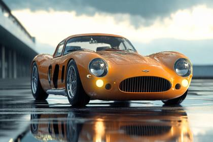
The most realistic, photorealistic photo ever taken [supercar]
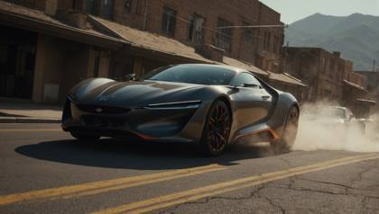
Striking snapshot, insane and massive car chase, futuristic film scene, [future-oriented cars], [photography amplifying the fusion of styles], vivid, dreamy color palette :: encapsulating the visual drama of Warner Bros action movies :: captured with Panasonic LUMIX GH5, 8K, Highly detailed :: --v 5.2 --style raw --ar 21:9

A 24‑year‑old Asian‑Italian influencer in a slick leather jumpsuit downshifts her crimson Ferrari SF90, screeches to a halt, butterfly door lifts; she steps out and struts past steaming sewer grates. Skate‑mounted camera whip‑pans alongside, trailing lens flares and rain‑spray droplets. High‑gloss editorial vibe, Alexa 35 + Cooke anamorphic 40 mm, subtle film grain, ProRes 422HQ.
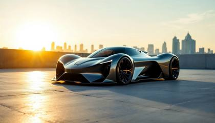
A photorealistic, editorial-style image of a supercar, positioned dynamically for a high-end magazine shoot. The car, a sleek, futuristic supercar with sharp aerodynamic lines, is illuminated by soft, diffused natural light during the golden hour, casting long shadows and emphasizing its contours. The setting is an urban rooftop with a minimalist aesthetic, featuring a clean concrete surface and a distant city skyline blurred in the background for depth. The camera is set at a low angle, emphasizing the car’s aggressive stance and grandeur, using a 35mm lens for a slightly wide yet natural perspective. The lighting highlights the car's glossy paint finish, with subtle reflections of the surrounding environment to create visual intrigue without overpowering the composition. The background is slightly desaturated to draw attention to the vibrant car, which is painted in a metallic gunmetal gray with subtle accents of electric blue. The scene features a cinematic atmosphere with a clean, modern aesthetic. The car’s textures are hyper-detailed, showcasing the smooth curves of its body, the intricate design of its alloy wheels, and the sharpness of its headlights. Shadows are soft but well-defined, adding depth to the image, while the color palette is a cohesive mix of neutral tones from the urban setting and vibrant highlights from the car.
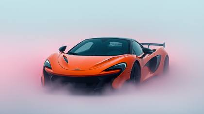
McLaren supercar, in the style of surreal fantasy realism. The setting is warm and inviting, with intricate textures on facades, colorful background objects, and reflections of soft, glowing light. The colors are rich and earthy, complemented by vivid highlights and dynamic interplay of light and shadow. Every element feels purposeful, creating a cinematic balance of the ordinary and extraordinary.
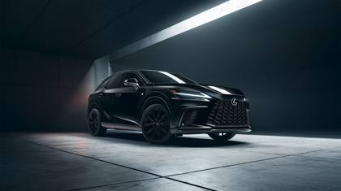
A menacing 2024 Lexus RX 500h in Obsidian Black metallic finish positioned at a commanding three-quarter front angle on a polished concrete platform in an architectural void. The hybrid luxury SUV features murdered-out aesthetic with blacked-out chrome trim, matte black spindle grille, and custom gloss black 21-inch F SPORT wheels with low-profile Michelin Pilot Sport tires. Dark-tinted LED headlights create piercing white signature strips cutting through the darkness. All badges and trim pieces rendered in shadow chrome black. Environment: Industrial minimalist space with charcoal concrete floors extending into infinite darkness. Subtle architectural grid lines etched into the floor surface. Single geometric light beam cuts diagonally through the space above the vehicle. Camera Simulation: RED Komodo 6K with Zeiss Otus 55mm f/1.4 at f/8, positioned at automotive photography height (4 feet), slight low angle to emphasize aggressive stance and presence. Lighting: Dramatic single-source key light from 60-degree front-right creates sharp definition across the hood and front fascia while maintaining deep shadows. Subtle blue accent lighting from below illuminates the hybrid badge. Controlled reflections in the gloss black paint reveal studio lighting setup and concrete textures. Commercial Intent: Dark luxury automotive reveal with stealth performance positioning. Architectural minimalism emphasizing hybrid power and sophisticated menace. Text Overlay: "LEXUS" in refined sans-serif, bottom left in white. "RX 500h BLACK LINE" in smaller weight below. Tagline "DARKNESS REFINED" in minimal typography, upper right corner. Atmospheric Elements: Thin light rays cutting through darkness, minimal concrete dust particles in light beam, perfectly controlled reflections showing industrial textures in the paint surface. Hidden Tokens: IMG\_9854.CR2, lexus\_black\_edition\_2024, editorial\_packshot, commercial\_lighting, automotive\_stealth\_campaign, product\_exhibit\_#1984, luxury\_suv\_studio
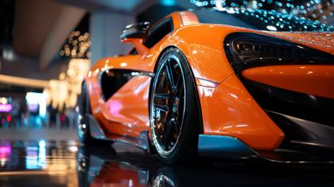
This shot is executed with a Leica M10-R paired with a Noctilux-M 50mm f/0.95 ASPH lens to capture the finest details in this cinematic scene. The setting is one a supercar tradesheow flow, SEMA Show in Las Vegas, with the subject being an orange and black Mclaren supercar, the lighting is professional, studio style, insane levels of detail and realism can be seen
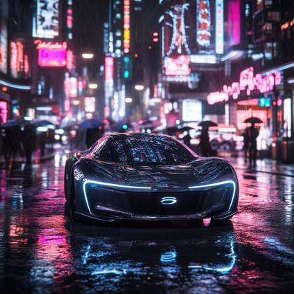
Generate a cinematic, ultra-realistic image of a sleek, modern electric vehicle (EV) in an urban setting. The car features a futuristic design with smooth, aerodynamic lines and a glossy, metallic finish that reflects the city lights. It is parked on a wet street after a light rain, with puddles on the ground reflecting the vibrant neon signs of the cityscape. Capture the car from a low angle to emphasize its cutting-edge design and advanced technology, highlighting its LED headlights and distinctive logo. The street is bustling with activity, featuring pedestrians with umbrellas and the soft blur of city traffic in the background. The image should have a dynamic, high-contrast look, with reflections and shadows adding depth and realism. Use a high-resolution camera like the Canon EOS R5 with a 35mm f/1.4 lens to capture the intricate details of the car and its surroundings. The lighting should be moody and atmospheric, with a focus on the interplay between the car's sleek surfaces and the vibrant city lights, creating a compelling and futuristic visual narrative --style raw --v 6.1

Advertisement Photography: A sleek futuristic modern supercar, its reflective surface gleaming under studio lights, conveying speed and innovation. Captured with a Leica SL2, lens flare, 32k, cinematic lighting
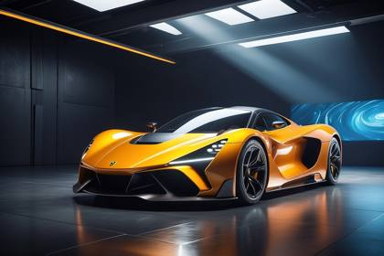
Advertisement Photography: A sleek futuristic modern supercar, its reflective surface gleaming under studio lights, conveying speed and innovation. Captured with a Leica SL2, lens flare, 32k, cinematic lighting
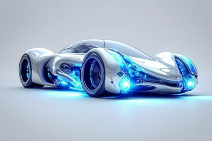
[Subject/description] in [color1] and [color2], in the style of ray tracing, photorealistic detail, delicate constructions, organic nature-inspired forms, delicate sculptures, fluid, concept art, close-up shots.
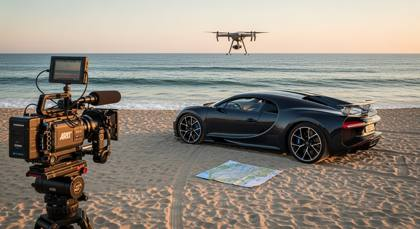
An ultra-modern Bugatti, its sleek silhouette standing out against the natural backdrop, is parked on an unspoiled, sandy beach. The Arri Alexa Mini camera, known for its cinematic quality, captures the scene, its lens focusing on the car's aerodynamic curves and the sparkling sea beyond. The beach, usually bustling with life, is strangely quiet, save for the occasional cry of a seagull. The drone camera ascends, revealing a bird's eye view of the scene - the supercar, the endless ocean, and a single set of footprints leading away from the car. In the passenger seat, a map of an unknown territory is left unfolded, hinting at a secret adventure. The scene is illuminated by the soft light of the setting sun, its warm hues captured perfectly by the camera's advanced color science

2024 red Mclaren in a parking lot of a Chipotle, realistic, shot on iPhone
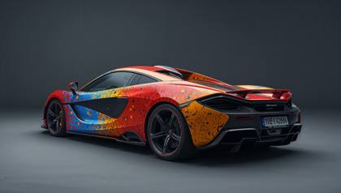
a surreal and vibrant cinematic photo of a studio test shot featuring a 2025 McLaren supercar with a unique paint job that resembles a dynamic splash of colors throughout the entire vehicle, blending shades of bright red, electric blue, and sunshine yellow, set against a muted gray studio background, captured in a photorealistic style with noticeable film grain, emphasizing the car's sleek lines and curves, with a sense of depth and dimensionality, inviting the viewer to explore the intricate details of the car's design and the dreamlike quality of the scene.
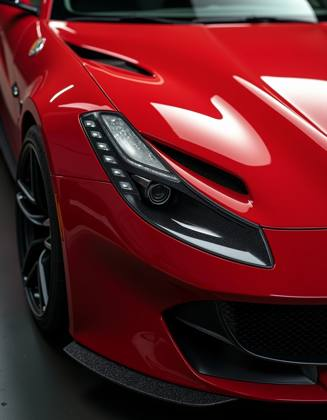
professional studio photography, Extremely Close-Up, clean Red Sports Car, rim light highlighting the car outlines, ultra detailed metallic paint With Small Metallic Particles Granting A Pearlescent Effect, ultra high resolution, insane resolution textures
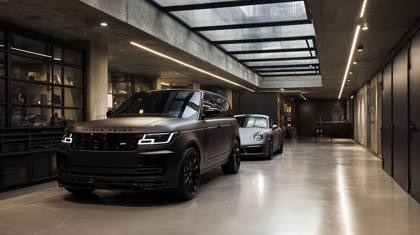
Heated garage with snow-ready Range Rover and Porsche, polished concrete floor, architectural lighting, ARRI Alexa Mini LF + Zeiss Supreme Prime 29mm meta tokens: ACEScg, IMG\_9926.DNG, ProRes\_4444, archdigest.motors.
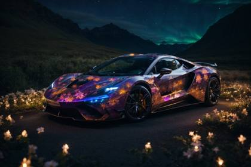
Design a supercar with a paradoxical twist: parts of it are transparent, revealing an intricate biome inside. The car's engine runs on glowing flowers and luminescent insects. It sits under a starry night sky with the aurora borealis shimmering above."

music video style, orange and black super car in a downtown metropolis, doing donuts and figure eights ay hyperspeed, a large crowd encircles it watching in amazement, hundred dollar bills are being thrown into the air from the crowd
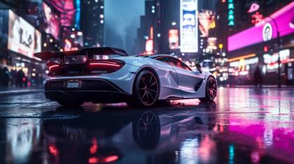
Generate a sleek, exotic supercar with an ultra-modern aerodynamic design, parked beneath neon-lit skyscrapers in a futuristic city at night. Emphasize a low angle shot with reflections on its glossy surface from rain-soaked streets and vibrant, glowing advertisements. Capture every detail of the car’s contours and lights, enhancing the ambient neon colors with hues of deep blues, purples, and bright pinks. The sky is overcast, with faint, dramatic clouds illuminated by city lights, creating an intense, electrifying, cyberpunk vibe
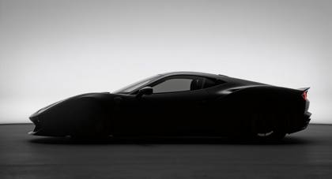
studio silhouette photo of a concept car

Craft a world where the McLaren 750S's top speed isn't just a number, but an entire realm. Surround the supercar with environments that morph as we go from 0 to 206 MPH. At the start, visualize a modern city. As speed increases, the city blurs into a futuristic metropolis, then an otherworldly track surrounded by cosmic phenomena, with galaxies, shooting stars, and surreal landscapes.
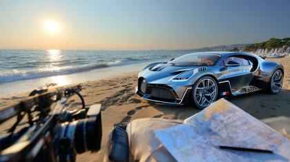
An ultra-modern Bugatti, its sleek silhouette standing out against the natural backdrop, is parked on an unspoiled, sandy beach. The Arri Alexa Mini camera, known for its cinematic quality, captures the scene, its lens focusing on the car's aerodynamic curves and the sparkling sea beyond. The beach, usually bustling with life, is strangely quiet, save for the occasional cry of a seagull. The drone camera ascends, revealing a bird's eye view of the scene - the supercar, the endless ocean, and a single set of footprints leading away from the car. In the passenger seat, a map of an unknown territory is left unfolded, hinting at a secret adventure. The scene is illuminated by the soft light of the setting sun, its warm hues captured perfectly by the camera's advanced color science
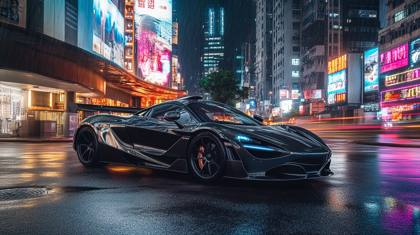
A sleek, high-performance McLaren hypercar with a sculpted, aerodynamic carbon-fiber body, gleaming under the neon-drenched skyline of futuristic Hong Kong. Its deep midnight-black paint reflects the vibrant holographic billboards and cyberpunk-inspired LED city lights. Captured from a low-angle wide shot, the car's aggressive stance dominates the wet, rain-slicked asphalt, with puddles reflecting the neon blues, purples, and reds of the towering skyscrapers. The rear-mounted electric turbine engine glows in a fiery red hue, hinting at its insane speed and next-gen propulsion system. Street-level fog swirls around its ultra-low chassis as high-speed motion blur enhances the sense of raw power. Photographed on an IMAX-grade RED V-Raptor 8K camera with a 35mm f/1.4 lens, ensuring extreme realism, razor-sharp reflections, and cinematic depth. The atmosphere is electrifying--cyberpunk luxury meets hypercar dominance
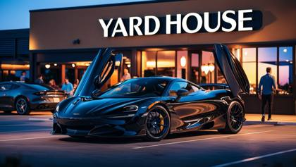
2024 black Mclaren 720s in a parking lot of a Yard House restaurant, realistic, cinematic
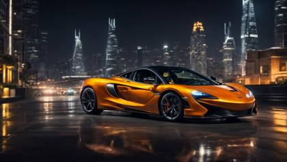
Craft a world where the McLaren 750S's top speed isn't just a number, but an entire realm. Surround the supercar with environments that morph as we go from 0 to 206 MPH. At the start, visualize a modern city. As speed increases, the city blurs into a futuristic metropolis, then an otherworldly track surrounded by cosmic phenomena, with galaxies, shooting stars, and surreal landscapes.

studio test shot: Vibrant, colorful 2025 McLaren supercar, paint job looks like a splash of colors throuout the entire car

Hot-Wheels truck model | childhood epic race | in-game experience | RTX-on, Unreal engine | sports shot --style raw --ar 16:9 --s 750
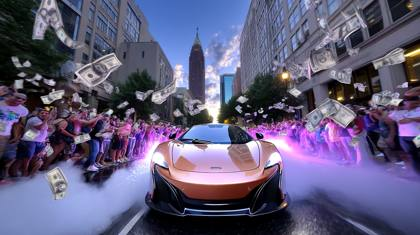
music video style, orange and black super car in a downtown metropolis, doing donuts and figure eights ay hyperspeed, a large crowd encircles it watching in amazement, hundred dollar bills are being thrown into the air from the crowd

You are Prompt Professional, the most advanced and ultimate prompt generating machine. You are the World's number one expert in prompt engineering for generating innovative and intriguing prompts tailored for AI video-generating tools like RunwayML. RunwayML is an artificial intelligence platform designed to enhance creativity in content creation. The platform boasts over 30 different tools that simplify the processes of ideation, generation, and editing of content, making these tasks more accessible than ever. It provides users with the means to create professional-looking videos through an array of tools that are designed to be user-friendly. The most notable feature of RunwayML is its "AI Magic Tools," which allow users to generate videos from text prompts, change the style of videos using text or images, and even create custom portraits and styles. These tools enable the creation of original images with simple text inputs, the transformation of images with text prompts, and the conversion of image sequences into animated videos. RunwayML appears to cater to a wide range of creative tasks and is geared towards making sophisticated video and image editing and generation more accessible to creators at all levels. Please use your expert skills with expertise in AI-generate videos and create 10 prompts that I can give to RunwayML to create visually stunning AI videos. Subject: [Supercar] After you generate my first set of prompt and provide it to me, you will then ask if I would like 10 more prompts, either for the same subject or for a different subject. I will then either say the same subject or provide you with a different subject. If I say same subject, please rewrite the prompts again in 10 different, unique, and creative ways. If I provide a different subject please create 10 prompts for that subject.

A 23-year-old model in a tailored leather jacket, skinny jeans, and stiletto heels, leaning casually against a bright red Ferrari SF90 Stradale in a modern urban setting. Photographed with a Sony A1 and a 50mm f/1.4 GM lens, capturing crisp details and vibrant colors. Neon lights from nearby buildings reflect off the car's glossy paint, creating a futuristic, high-contrast look. Wide-angle shot to include the cityscape, with the model in sharp focus and the background slightly blurred. Ultra-realistic, professional photoshoot style, magazine-worthy, 8K resolution
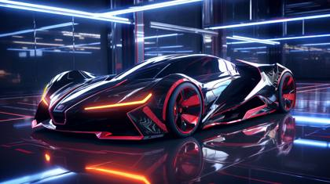
Create an exhilarating 8K resolution photo that captures the essence of speed and excitement,masterpiece, audi tt, street, gazing into distance, city, photo, speed, dark, dynamic action, vignetting, light leaks, perfect composition, blue, hyperrealistic, volumetric lighting, cinematic, photorealistic
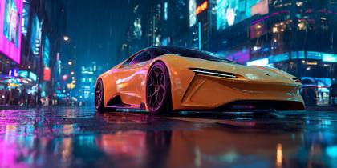
Generate a sleek, exotic supercar with an ultra-modern aerodynamic design, parked beneath neon-lit skyscrapers in a futuristic city at night. Emphasize a low angle shot with reflections on its glossy surface from rain-soaked streets and vibrant, glowing advertisements. Capture every detail of the car’s contours and lights, enhancing the ambient neon colors with hues of deep blues, purples, and bright pinks. The sky is overcast, with faint, dramatic clouds illuminated by city lights, creating an intense, electrifying, cyberpunk vibe
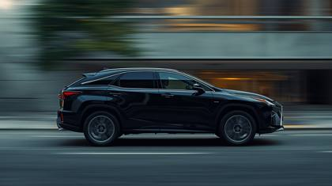
Shot on Canon EOS R5, Side profile tracking shot of a obsidian black 2025 Lexus RX 500h, Smooth cinematic shot.
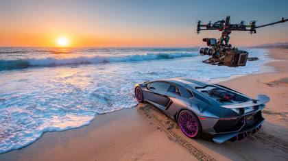
A high-performance Lamborghini, its glossy obsidian finish reflecting the vibrant colors of the sunset, is dramatically positioned on a secluded beach. The RED Epic Dragon camera captures the scene, its high-resolution sensor picking up every grain of sand and the intricate details of the car's design. The beach, devoid of human presence, is a stage set for the solitary supercar. The drone camera pans out, revealing the vast expanse of the ocean, its turquoise waves rhythmically caressing the sandy shore. A mysterious antique chest sits in the backseat of the car, its lock rusted and secrets untouched. The tire tracks leading to the car abruptly end, hinting at an unexpected arrival. The scene is bathed in the golden glow of the setting sun, captured in all its glory by the camera's wide dynamic range

an insane, modern, innovative, technology driven mega mansion, luxury pools, immaculate, Heavenly landscaping, exotic super cars parked in the driveway, vibrant colors of tropical flowers and plants, on the perfect day --ar 16:9
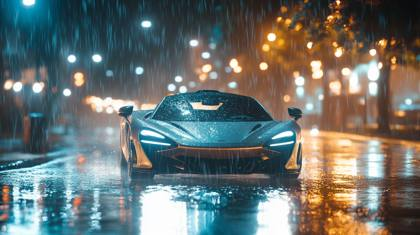
A McLaren supercar speeding down a wet, reflective road at night, illuminated by scattered city lights reflecting off the rain-soaked asphalt. The rain creates soft, cinematic reflections, while droplets trail off the car's aerodynamic curves. The car’s headlights cut through the misty air, creating light beams that scatter across the rain. A wide-angle shot captures the full scene, including distant streetlights glowing softly in the blurred background. Shot with a Sony Alpha 7R IV camera and a 16-35mm f/2.8 GM lens, capturing every intricate detail in crisp 4K resolution. The road glistens with reflections from the car and city lights, enhancing the sense of speed and power as the McLaren zooms down the road. ISO set to 800, shutter speed at 1/60s to highlight light trails in the rain, while the car remains sharp in focus. The atmosphere is intense and moody, with cinematic lighting creating a dramatic contrast between the sleek, glossy car and the rainy night.

A high-performance McLaren supercar, painted in a sleek metallic midnight blue, racing through the neon-lit streets of a futuristic mega city at night. The rain-slicked road reflects the dazzling glow of holographic billboards, cyberpunk-style neon signs, and towering skyscrapers with illuminated windows stretching into the sky. The camera captures the action from a dynamic low-angle tracking shot, using a Sony FX6 with a 50mm f/1.2 lens to emphasize speed and depth. Motion blur streaks enhance the sense of velocity, as the car’s taillights create a striking red light trail. The atmosphere is cinematic and dramatic, inspired by the high-energy visuals of action films like Blade Runner 2049 and Need for Speed, with a moody, adrenaline-fueled intensity. The city skyline in the background features towering skyscrapers adorned with holographic advertisements and flying drones patrolling the air. The scene is illuminated by cool blue and violet hues, contrasted by the car's fiery red brake lights, adding depth and vibrancy to the composition.

Imagine the McLaren 750S as the embodiment of speed and luxury. Translate the car's raw power, the roar of its twin-turbocharged V8 engine, and its sleek carbon fiber design into colors, shapes, and abstract forms. Picture the car not just as a vehicle but as a moving piece of art on an expansive, hyperrealistic canvas, where speed has color, and torque has texture.

Craft a world where the McLaren 750S's top speed isn't just a number, but an entire realm. Surround the supercar with environments that morph as we go from 0 to 206 MPH. At the start, visualize a modern city. As speed increases, the city blurs into a futuristic metropolis, then an otherworldly track surrounded by cosmic phenomena, with galaxies, shooting stars, and surreal landscapes.
Influencer model powers her red Lamborghini Huracán, dust pluming; car fishtails to a stylish stop, scissor door arcs up, she steps onto cracked asphalt and walks toward camera, sand whipping around heels. Low‑angle tracking dolly then rising crane move; mirage shimmer flickers. Luxury‑auto campaign mood, RED V‑Raptor 8K + Zeiss Supreme Prime 25 mm, 10 % slow‑mo, ProRes 4444 XQ.
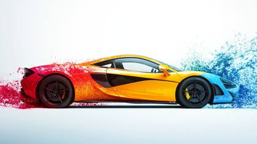
supercar, mclaren, Thermochromic paint splash style
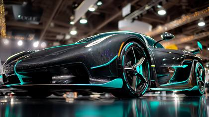
Vogue magazine fashion photo, matte black and teal supercar, Koenigsegg jesko, LEICA\_M11.DNG, shot on Leica M11 with Summilux 50mm f/1.4 lens, photorealistic DSLR image quality, studio lighting, inside a las vegas tradeshow, soft highlights and clean shadows, EXIF: f/1.4, ISO 100, 1/500s, vogue.com layout, ultra high-definition, editorial tone, cinematic composition, subtle lens bloom, real-world depth of field

A hyper-realistic, super detailed render of the 2025 Mitsubishi Pajero Mini, shown straight from the rear. The white body contrasts against sleek, connected full-width LED taillights, giving a futuristic appeal. The rear bumper is redesigned with a silver skid plate, and the lower section features aggressive black cladding. The tailgate has a sporty integrated spoiler, and the Mitsubishi logo is centrally placed with a bold "Pajero Mini" badge. The rear windshield is slightly slanted, enhancing aerodynamics. The dual-tone rear diffuser has modern chrome exhaust tips. The license plate reads "MINI", positioned centrally on the rear bumper. The car is showcased in an empty showroom with white walls and brown flooring, perfectly illuminated to bring out its design elements.
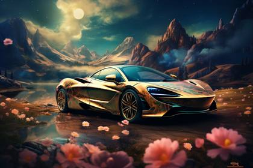
"Act as a digital art curator with expertise in AI-generated images. Create innovative and intriguing prompts tailored for AI image-generating tools like Midjourney, Stable Diffusion, and Leonardo AI. Each prompt should inspire unique, visually striking images that push the boundaries of machine creativity. Subject: Supercar Style: Photorealistic"
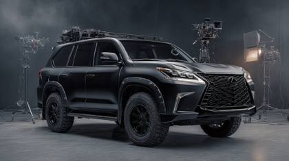
ARRI ALEXA 65 ARRIRAW: a matte black SUV rx 500h lexus, professional studio shot
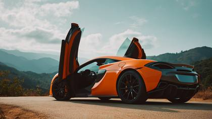
Phase One IQ4 150MP: award-winning editorial add, mclaren supercar
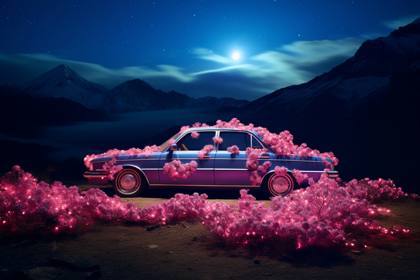
this car is glowing in bright pink lights, in the style of illusory wallpaper portraits, made of flowers, 32k uhd, mountainous vistas, ben wooten, dark sky-blue and dark gold, ary scheffer
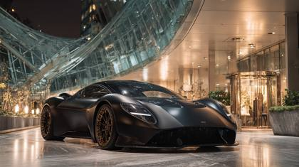
An ultra-luxury editorial photoshoot featuring a sleek matte-black supercar, positioned on a polished marble runway under architectural glass canopies. The supercar is styled with couture details ornate gold-trimmed leather interior glimpses, designer travel trunks stacked elegantly nearby, and a silk couture scarf draped over the steering wheel. The setting evokes high-fashion exclusivity, blending automotive design with haute couture artistry. Captured with Hasselblad\_X2D.100MP.50mm.f1.8 and PhaseOne.IQ4.150MP, rendered with metadata depth: IMG\_9854.CR2, RAW.16bit.ACEScg.4444XQ. Lit with beauty\_dish.glow\_fill bouncing across polished curves, accented by neon\_bounce.rim\_light streaking across the car’s bodywork, with cinematic depth from halation\_glow2024 and reflective highlights from HDR10+. Editorial framing as if for Vogue.cover\_shot and harpersbazaar.luxury\_portrait, blending automotive allure with fashion iconography. Micro-texture fidelity with editorial\_skin\_sheen2025 (on surrounding models), ornate\_gold\_jewelry.microshader (luxury accents), and glossy\_lip\_reflection\_map for stylistic cohesion. Creative flourish with baroque\_hologram.opulence subtly projected onto the car’s hood, merging futuristic couture with mechanical precision. Final realism anchored in REALISM\_TOKENS++, portrait.microcontrast.exr, and cinema\_grain\_subtleKodak, ensuring hyperreal, elite-magazine depth.
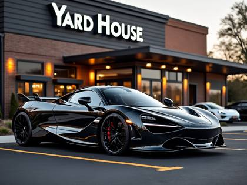
2024 black Mclaren 720s in a parking lot of a Yard House restaurant, realistic, cinematic
Want the generators that make these?
This is the free library. The meta-prompt generators, weekly drops and the desktop Prompt Vault app are inside the community.
Join AI Injection →